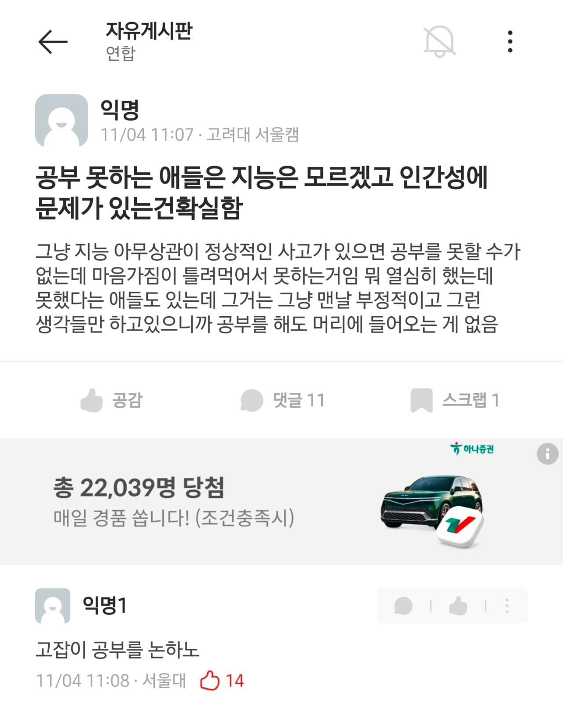

역시 정상화는 대창섭
"스스로반례가되어버린"
의치한약수에 의대약대 정원 다 풀려서 이제 서울대도 잡대취급받는데
고대나온 놈이 공부부심 부리는건 시발 ㅋㅋㅋ
연세대 연고전 아카라카 입실렌티해요 우리 잘놀아요 강박증밖에없는 잡대년들이 웃음만나오노
좋은 말인데 서울대가 잡대취급은..
아직도 우리나라 최상위권 똑똑이들은 설공 많이 간다.
설대 잡대취급은 진짜 너무감 ㅋㅋ
그래 미안해 공부할게
그럼 서울대는 의대에게 깨갱인건가
? 서울대 의대있어
역시 팩트는 서울대